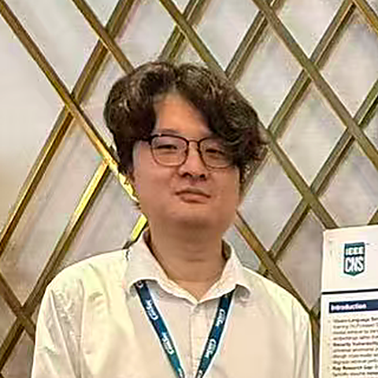
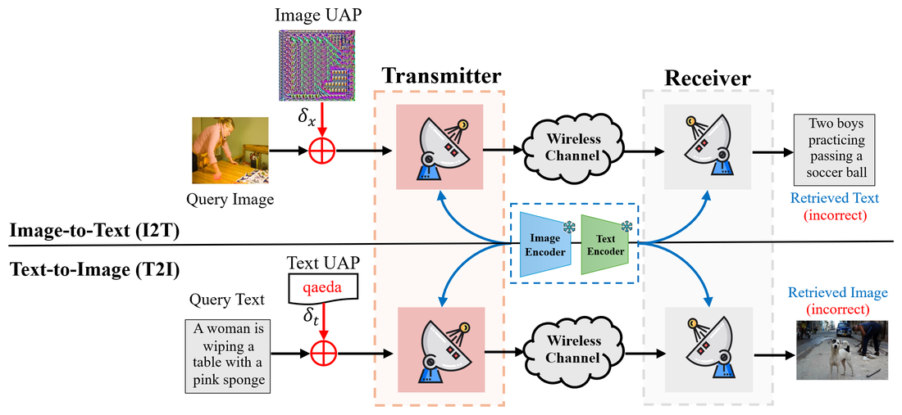
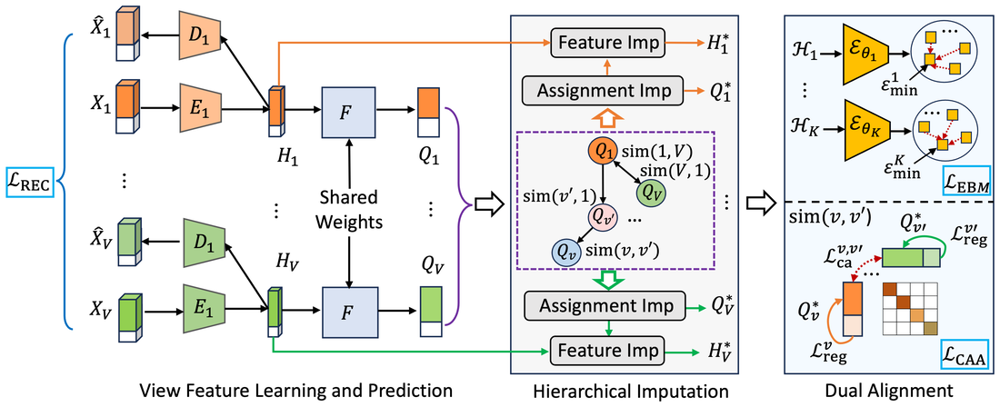
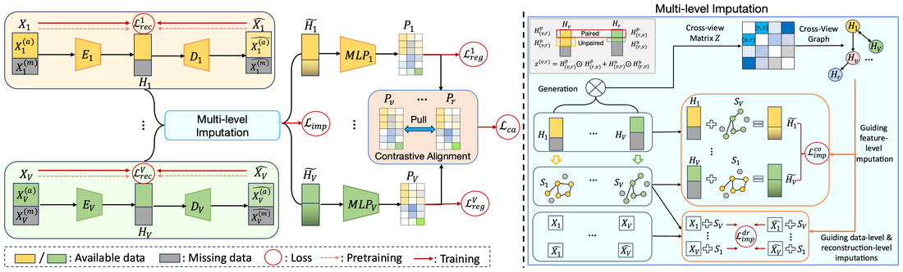

Ziyu Wang
Ph.D. Candidate, Computer Science — Old Dominion University
I am a Ph.D. candidate in Computer Science at Old Dominion University, advised by Prof. Lusi Li. My research centers on energy-based models for robust representation learning, with applications to multi-view clustering, semantic communication, and AI security — including the robustness of vision-language pre-trained models under adversarial perturbation.
I am broadly interested in building learning systems that stay reliable when data is incomplete, noisy, or adversarial.

Selected Publications

Not All, but the Right Ones: Energy-Guided Representation Learning for Incomplete Multi-View Clustering

SemCom-UAP: Universal Adversarial Perturbations Against Cross-Modal Retrieval in Semantic Communications

Deep Incomplete Multi-View Clustering via Hierarchical Imputation and AlignmentOral

Deep Incomplete Multi-view Clustering via Multi-level Imputation and Contrastive Alignment

Energy-based Deep Incomplete Multi-View Clustering

ECSC: Energy-Calibrated Semantic Communication

Incomplete Multi-view Clustering via Structure Exploration and Missing-View Inference
Education
Ph.D. in Computer Science (in progress)
Old Dominion University, Norfolk, VA · Advisor: Prof. Lusi Li
B.S. in Electrical and Information Engineering
China University of Geosciences, Wuhan, China
Service
Journal Reviewer
IEEE Transactions on Neural Networks and Learning Systems · IEEE Transactions on Image Processing · IEEE Internet of Things Journal · IEEE Transactions on Consumer Electronics · IEEE Transactions on Multimedia · ACM Transactions on Knowledge Discovery from Data · Neural Networks (Elsevier) · Information Fusion (Elsevier) · Image and Vision Computing (Elsevier) · Expert Systems with Applications (Elsevier)
Conference Reviewer
AAAI Conference on Artificial Intelligence · ACM International Conference on Multimedia (ACM MM)